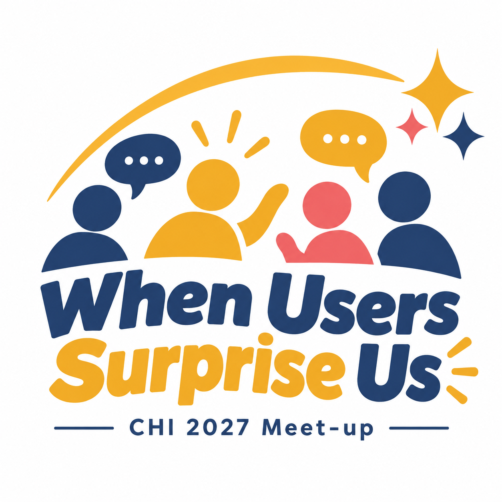

You’ve studied a specific participant group.
Share a moment that challenged your expectations, an adjustment that helped, or a question you’re still thinking about.

Join our meet-up and share stories about the unique, fun, and memorable participants you’ve met during user studies.
A participant takes a shortcut you never anticipated. A familiar feature becomes something entirely new.
User studies don’t always follow the script. Particularly when working with specific participant groups, understanding these moments means looking again at people’s backgrounds, priorities, and everyday practices.
When Users (Pleasantly) Surprise Us is a space to share what happened, how we responded, and what we learned. Together, we’ll explore how unexpected behavior can reveal new insights and opportunities to improve our systems and studies.
Difficult experiences, helpful adjustments, pleasant surprises, and questions that remain open all belong here.
Share a moment that challenged your expectations, an adjustment that helped, or a question you’re still thinking about.
If you’ve helped run sessions or worked with the people taking part, your observations can add another perspective.
Preparing your first study, working with a new group, or experienced with general populations? Bring your curiosity and questions.
Write the participant groups you’ve studied—or would like to learn about—on your badge. Meet the organizers and hear a short example to get the conversation started.
Note your study context, what you expected, what happened, and how you responded. An unresolved situation is welcome, and preparing a card is optional.
Join four to six people with related participant-group experiences. Start with a two-minute case introduction, then exchange questions and practical insights grounded in familiar contexts.
Organizers will mix experiences across participant groups. Newcomers can follow their interests, and attendees may remain seated while others move.
Share the same case cards with your new group. Hear unfamiliar experiences, explore similarities and differences, and leave comments, questions, or suggestions on one another’s cards.
Each group shares an assumption or question that emerged. Follow up on a note someone left, continue an interesting conversation, and exchange contact details if you wish.
Ph.D. student
GIST, South Korea
🥽 VR/AR 🏆 Sports 🚗 Vehicles
Ph.D. student
GIST, South Korea
🧸 Children ♿ Accessibility 🚗 Vehicles
Ph.D. candidate
GIST, South Korea
🏸 Sports HCI 🏃 Athlete/Coach 🎯 Human–AI Skill Learning
Ph.D. candidate
GIST, South Korea
🤖🤝🧑 Human–AI Interaction ✨ Generative AI 🎨 Creative Support 🧑⚕️ Experts
Ph.D. student
GIST, South Korea
🤖🤝🧑 Human–AI Interaction 💬🤖 LLM 🧑⚕️ Experts
Assistant professor
Chosun Univ., South Korea
🧩 Autism 🖥️ Interactive Systems 💬 Engagement
Professor · Director, PAIR-HCI Ctr.
GIST, South Korea
🦾 Physical AI 🥽 XR 👁️👂✋ Multisensory Interaction 🚗 Vehicles
Associate professor
UT Dallas, USA
✋ Haptics 🔊 Multimodal Interaction 🌡️ Thermal Interfaces 🤲 Tactile Interfaces
Professor · Director, CSAIL
MIT, USA
🤖 Robotics 🤝 Human-Robot Collaboration 💡 Human Intent